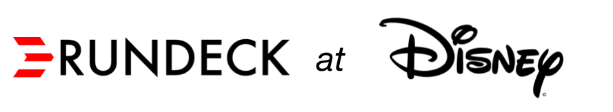

|
Rundeck is a key tool in the toolbox for the Systems Engineering team at The Walt Disney Corporation. As with any diverse and expanding organization, this team realized that they needed both standard operating procedures and way to safely give people on other teams self-service access to those procedures. That’s where Rundeck came in.
“Rundeck helps keep Ops out of the way of the business”
-Jordan Koch (Sr. Manager of Systems Engineering)
As with any fast moving organization, operations can become a significant bottleneck if they are the ones who do deployments in all environments. After the decision to allow developers to do deployments in non-production environments, Rundeck was used to create self-service deployment capabilities. While Ops retains the ability to define procedures and access control policies, the business/organization was given a self-service push-button option to streamline and expedite workflow.
One of the earliest use cases was deploying static assets to to pre-prod and prod environments. Rather than the old method of having someone from the systems engineering team log in directly to servers, a Rundeck Job was was set up to kick off Chef (configuration management software) which would pull and deploy the content from versioned folders in the asset repo (eg. S3). This new method allowed teams to deploy assets as fast as they wanted without making the Systems Engineering team a bottleneck. Through this same model, other operational capabilities can be extended to developers.
“Whatever works for the business we are supporting is what we do”
The self-service model has also made it easier for Disney’s globally dispersed teams to avoid some of the blockers that naturally arise when you need something from a team that is many time zones away. In the past, if a team in India needed something deployed they would have to wait until 9am Pacific for a team in California to become available. It would be common to lose at least a day in turnaround time. With this new self-service model, those offshore teams can now safely move as fast as those teams determine is necessary.
“It’s the swiss army knife for ops. We can have Rundeck do anything as long as we can script it.”
Aside from Deployment uses, Rundeck is also more broadly used as a general purpose operations tool at Disney. Disney has a diverse set of technologies (including multiple scripting languages and automation tools) running on Linux and Windows in both their own datacenter and public clouds (eg. AWS, Azure, and Google Cloud). Rundeck provides a common point from which standard operating procedures can be defined, secured, and delegated to others as needed.
“You talk someone through it and within 5 minutes they get it”
From simple tasks like restarts, cache clearing, or log fetching to more complex tasks like server patching or BI data processing jobs, Rundeck has become a multi-purpose tool. Many business lines have their own Rundeck, configured to their specific needs. ACL policies are defined in Rundeck to lock down who can run what. Email notifications are used to keep people in the loop.
“At 2 am in the morning, it’s better to have a button to push and not start typing in commands in a shell”
Disney’s Rundeck usage continues to expand and evolve, from Tier 1 support to Developers to seasoned operations engineers, most teams have found something they can do with Rundeck.
Special thanks to Jordan Koch and Jason Cox for helping us put this together.